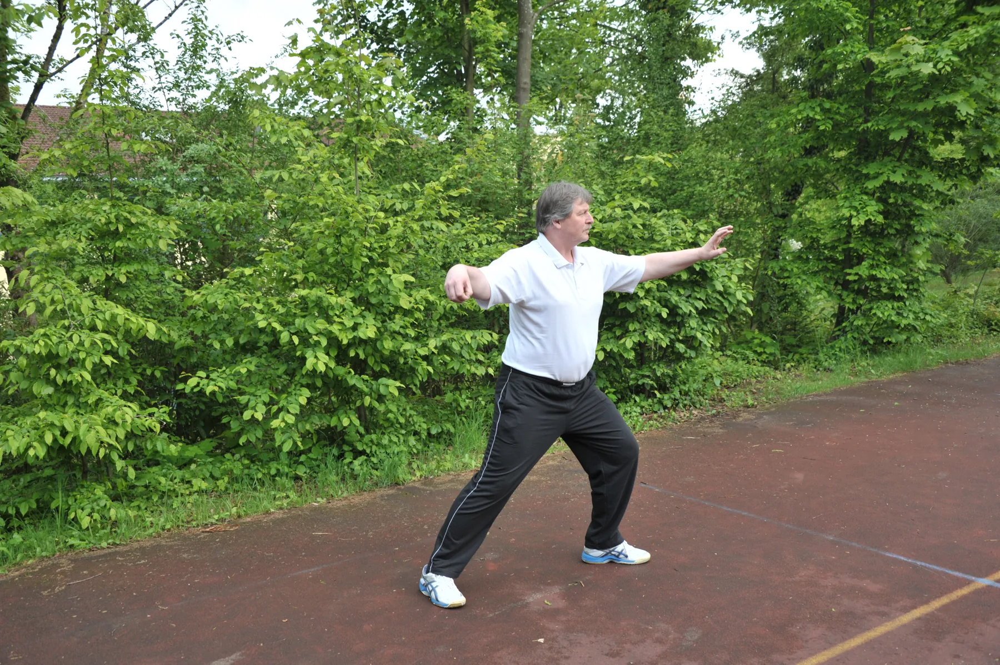
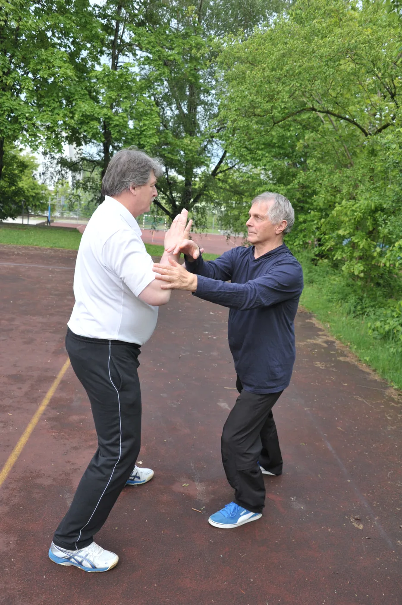
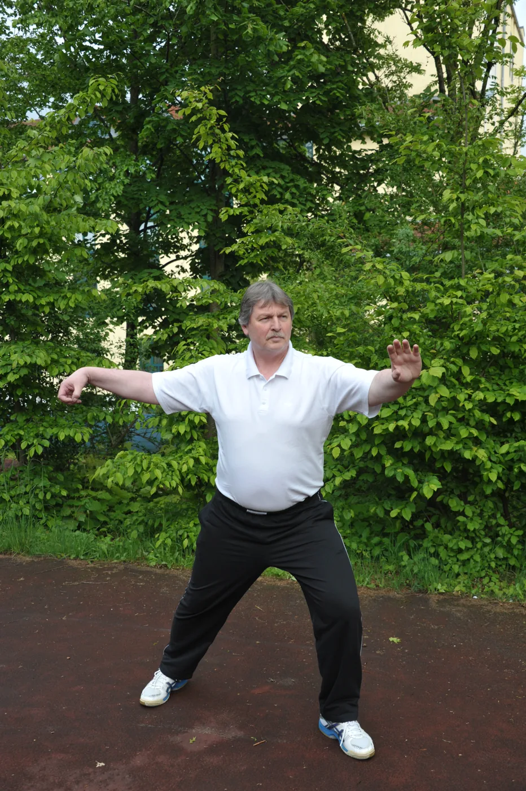

Taiji

Ruhe, Bewegung, Wahrnehmung
Innere Kampfkunst
Taiji umfasst ein umfangreiches System von Kampfkunst und Selbstverteidigung, Gesundheitstraining und mentalen Übungen. Speziell Körperwahrnehmung, bewusstes Erkennen und Loslassen von Verspannungen sowie Koordination sind wichtige Trainingsbestandteile, die direkt in das Alltagsleben übertragbar sind.
Gesundheit und Alltag
Körperwahrnehmung
Die langsamen, fließenden Bewegungen ermöglichen ein feinfühliges Erkennen und Korrigieren ungünstiger Haltungs- und Bewegungsmuster. Die Partnerübungen geben dabei wertvolles Feedback über die Fortschritte des Übenden, auch wenn dieser kein Interesse an der Anwendung in Kampfkunst oder Selbstverteidigung hat.
Das weite Feld der Übungsmöglichkeiten reicht von meditativen, entspannenden Übungen bis zu körperlich und mental anstrengendem Solo-, Partner- und Selbstverteidigungstraining. Dadurch kann das Training an individuelle Bedürfnisse, Voraussetzungen und Zielsetzungen angepasst werden.

Chen Taiji
Formen, Partnerübungen, Theorie
Wie die meisten Kampfkünste existieren auch im Taiji verschiedene Stilrichtungen, die sich auf chinesische Familienstile beziehen. Äußerlich unterscheiden sie sich zum Teil sehr deutlich, gemeinsam berufen sie sich auf grundlegende Prinzipien taoistischer Philosophie, zum Beispiel Yin und Yang, Wuwei, Chi oder Achtsamkeit.
In unserem Unterricht beziehen wir uns auf das Chen Taiji. Dazu gehören Chen Taiji Formen, Seidenfadenübungen, Partnerübungen, Tuishou, Meditationsübungen und theoretische Grundlagen.

Gruppen
Erwachsene von 20 bis 80+
Unsere zentralen Trainingsinhalte sind Chen Taiji Formen, überwiegend ohne Übungswaffen und für Fortgeschrittene auch mit Übungswaffen, Seidenfadenübungen, Partnerübungen, Tuishou, Meditationsübungen und theoretische Grundlagen.
Wir haben nur Erwachsenentrainingsgruppen für Anfänger und Fortgeschrittene. Die Altersspanne unserer Taiji-Trainierenden liegt zwischen den Zwanzigern und Achtzigern und umfasst alle Geschlechter.